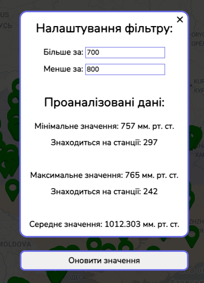

Головне меню
При запуску мапи ви, спочатку, побачите лише навігаційну панель, біологічні показники, вибір дати, меню фільтру/аналітики та пусту мапу:

Для того, щоб розпочати працювати з програмою, ви маєте обрати будь-який з показників, який вам заманеться, та якщо потрібно, змінити дату відображення. Наприклад, візьмемо інформацію за перше листопада 2023 року, про вологість. Застосунок покаже нам наступну картинку:

Тут ви зможете побачити велику кількість метеостанцій, які відображують інформацію, та зрозуміти, що значать ті чи інші кольори за допомогою легенди, яка розташована у правому нижньому куті мапи.
Натиснувши на будь-яку з точок, можна побачити номер станції, місце, вулицю, локацію (у світових координатах) та обраний показник, як на фото нижче:

Натиснувши на кнопку «Графік», ви зможете його отримати. Він буде відображати історію про цей показник у цьому місці за минулий час:
Окрім цього, в програмі реалізована додаткова функція, яка активується при кліку на кнопку «Поради». Після її натиснення, ви зможете клікнути на будь-яке місце на мапі та отримати поради, як захиститись від можливих загроз. При цьому програма знаходить найближчу метеостанцію до обраної точки та аналізує її дані. Якщо обраний показник (наприклад, вологість, рівень забруднення повітря тощо) вказує на задовільний стан, користувач отримає повідомлення, що усе в порядку.

У випадку, якщо вимірювані показники вказують на неприйнятний стан атмосфери, користувач буде проінформований про це, а також отримає корисні поради та рекомендації. Наприклад, у випадку високого рівня забруднення повітря або низької вологості можуть бути запропоновані поради щодо використання захисних масок або зволоження повітря в приміщенні для збереження здоров'я.

Також, якщо ви захочете обрати режим «Усі показники», то при натисненні вам виведе інформацію про кожен з показників, наприклад:

Окрім цього, є функція фільтру. Вам потрібно лише ввести проміжок значень, за яким ви хочете відфільтрувати ваші метеостанції, а саме це значення відповідає раніше обраному вами показнику, після оновлення даних приберуться усі мітки, значення яких не входить у цей проміжок. Також у цьому меню окрім фільтру присутня аналітика, а саме: мінімальне, максимальне та середнє значення.
Ще одна функція програми – зміна дати. Натиснув на відповідну кнопку, ви зможете побачити випливаючий список, натиснувши на будь-яку з цих кнопок ви зміните день відображення інформації на обраний.
Також реалізована функція зміни теми сайту на будь-яку іншу – натиснувши на відповідну кнопку, ви побачите випливаючий список з кольорами, та ви зможете обрати той, який захочете: